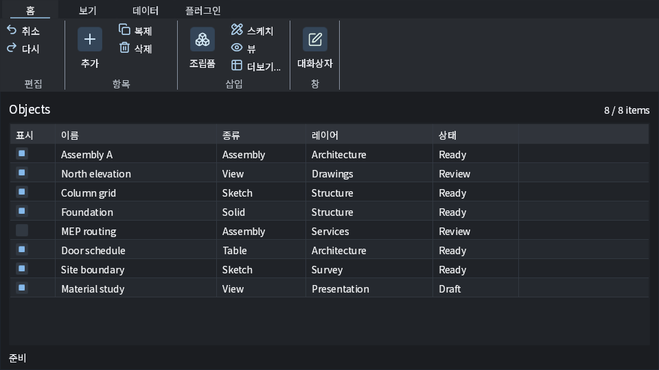
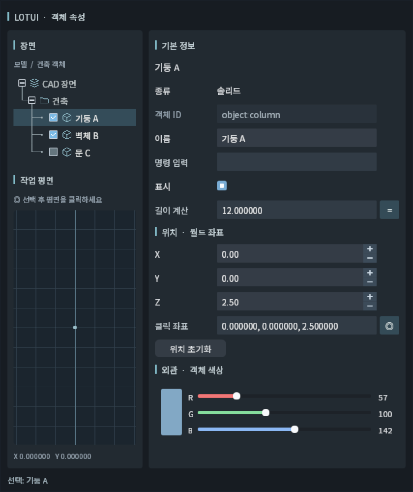

ListControl
가상화 테이블에 셀 편집, 정렬, 열 크기 조절과 순서 변경을 더하세요. 고정 열과 사각형 선택도 지원합니다.
문서 읽기복잡한 데스크톱 인터페이스를 위한 GUI 프레임워크. C++의 제어력에 Vulkan 렌더링을 더하세요.

테이블·리본·편집기·타임라인까지.
데스크톱 도구에 필요한 인터페이스를 구성하세요.
가상화 테이블에 셀 편집, 정렬, 열 크기 조절과 순서 변경을 더하세요. 고정 열과 사각형 선택도 지원합니다.
문서 읽기탭과 그룹으로 명령을 구성하고, 모달·모델리스 대화상자를 연결하세요. 공통 입력과 포커스 모델을 사용합니다.
문서 읽기C++로 위젯을 구성하거나 선택적 선언형 LotML로 레이아웃을 작성하세요. 동일한 위젯 트리로 동작합니다.
문서 읽기색상을 조정하고, 데이터를 그리고,
코드와 키프레임을 편집하세요.
객체·레이어 색상을 RGB 채널로 편집합니다. 색상 미리보기와 변경 콜백을 앱의 데이터 모델에 연결하세요.
문서 읽기줄 번호, 구문 색상, 한글 입력, 검색과 Undo/Redo를 갖춘 C++ 코드 편집기 예제입니다.
문서 읽기여러 데이터 계열과 축·격자를 표시하고 확대·이동합니다. 객체 체크 목록으로 표시할 계열을 선택하는 예제도 제공합니다.
문서 읽기노드·포트·연결선을 표시하고 노드를 선택·이동합니다. 캔버스 이동과 포인터 중심 확대를 지원합니다.
문서 읽기트랙과 키프레임, 재생·시간 스크럽, 다중 선택과 그룹 이동, 보간·삭제를 연결하세요.
문서 읽기대화 목록과 질문·답변 레이아웃을 구성합니다. 언어별 코드 색상과 코드 복사, 입력창 예제를 제공합니다.
문서 읽기현재 저장소에 공개된 실제 실행 화면입니다.
탭을 눌러 각 예제를 살펴보세요.

행 명령, 검색, 다중 값 필터의 실제 실행 영상입니다.
동일한 C++ 위젯 API.
SDK와 준비 사항은 플랫폼별로 확인하세요.
VS Code에서 Ctrl+Shift+B로 빌드합니다. 최초 실행 시 휴대용 컴파일러·CMake·Ninja·Vulkan 헤더·폰트를 자동으로 준비합니다.
Windows 빌드 안내포함된 Apple Silicon SDK는 macOS 27 이상용입니다. Apple Clang·CMake·Ninja·Vulkan SDK/MoltenVK와 폰트를 먼저 준비하세요.
macOS 빌드 안내대상 Linux 환경에 맞는 GCC SDK가 필요합니다. 기존 Linux 검증은 기본·헤드리스 경로이며, 전체 GUI 검증은 별도로 진행해야 합니다.
Linux SDK 안내SDK별 위젯 버전이 다를 수 있습니다. 포함된 macOS SDK는 GraphCanvas 이전 버전이므로 최신 위젯은 SDK 재빌드가 필요합니다. Windows·Linux GUI 실행에는 Vulkan 지원 그래픽 드라이버가 필요합니다.
플랫폼별 검증 기록저장소를 받고 VS Code에서 빌드하세요.
예제는 공개 헤더와 정적 SDK만 사용합니다.
git clone https://github.com/lotcad/LotGUI_Sample.gitWindows · Ctrl+Shift+B
macOS · Cmd+Shift+BTerminal → Run Task에서 LotGUI: run example (portable)을 선택하세요. macOS는 앞서 안내한 도구 설치가 필요합니다.
공개 헤더·예제의 라이선스와 플랫폼별 SDK 사용·배포 안내를 저장소에서 확인하세요.